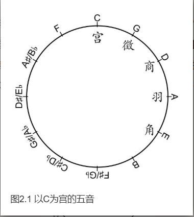
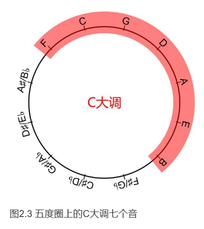
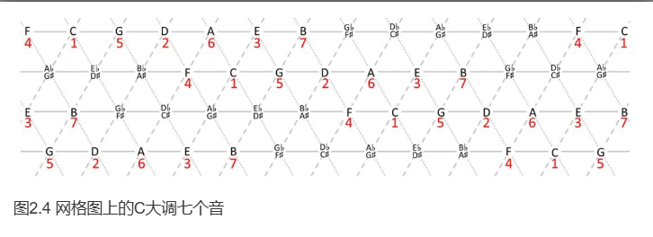
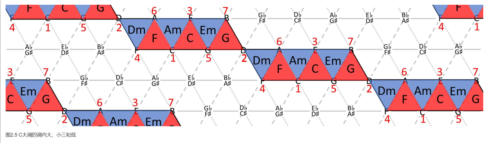
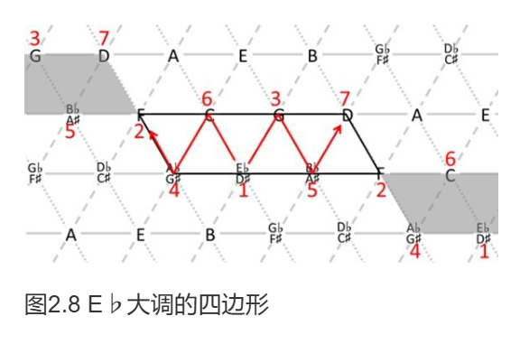
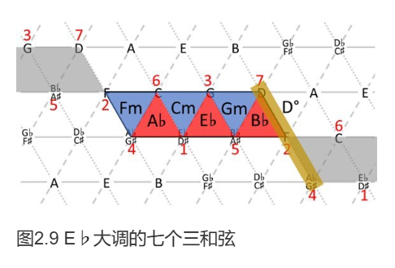
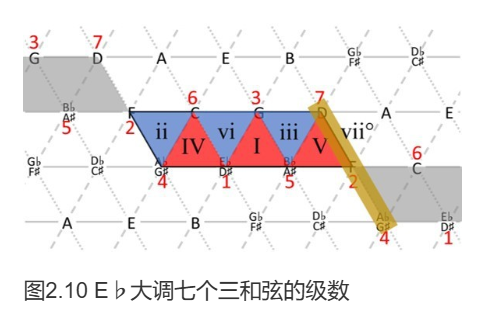

第二章 大调和声
2.1 大调三和弦
自然大调
我们都知道中国民族调式是宫、商、角、徵、羽，它们是在五度圈上截取连续的五个音得到的。比如，以C为宫，就能找到一组五声音阶：C宫、D商、E角、G徵、A羽。

然而，仅用这五个音，难以构成丰富的和声。西方音乐在此基础上，沿着五度圈前后各扩展一个音，形成了七声音阶（Hepatonic scale），也就是我们熟悉的自然大调。

调（Key）的本质是建立一套等级体系。在C大调中，这七个音被称为调内音 (Diatonic note)，其余五个则是调外音 (Chromatic note)。作为核心的C音，被称为主音 (Tonic)，它具有最强的稳定感。
小实验： 试着哼唱C大调音阶 "1-2-3-4-5-6-7"，并停在 "7" 上。是不是感觉悬在半空，迫切地想唱出高音 "1"？这种回归起点的倾向，正是主音“稳定”感的体现。
C大调的七个音在网格图中的位置如下。请思考一下，利用这些音可以组成多少个不同的三和弦呢？

调内三和弦
在C大调的七个调内音中，我们可以构建出七个基础的三和弦，它们被称为调内三和弦 (Diatonic Triads)。其中包括三个大三和弦（C, F, G）和三个小三和弦（Dm, Em, Am）。

还剩下一个以7级音B为根音的和弦。它由“小三度+小三度”构成 (B-D-F)，根音到五音是减五度，因此被称为减三和弦 (Diminished triad)，记作 B° 或 Bdim。它的音响效果很不协和，具有强烈的紧张感。
至此，我们找出了C大调全部的七个调内三和弦。为了方便分析，我们习惯用罗马数字来标记它们的级数。大三和弦用大写，小三和弦和减三和弦用小写。
| 级数 | C大调和弦 | 和弦性质 |
|---|---|---|
| I | C | 大三和弦 |
| ii | Dm | 小三和弦 |
| iii | Em | 小三和弦 |
| IV | F | 大三和弦 |
| V | G | 大三和弦 |
| vi | Am | 小三和弦 |
| vii° | Bdim | 减三和弦 |
任意大调的三和弦
所有十二个大调都遵循着完全相同的内部结构。这意味着，无论主音是什么，其调内三和弦的级数和性质都是固定不变的。例如，所有大调的I、IV、V级都是大三和弦，ii、iii、vi级都是小三和弦，vii级都是减三和弦。
我们可以利用网格图的同构性，快速找到任意大调的调内音与和弦。以E♭大调为例，我们只需将C大调的结构平移到以E♭为主音的位置即可。

在确定调内音时，请记住两个规律：
- 七个调内音必须刚好用完 C, D, E, F, G, A, B 七个字母，不能重复或遗漏。
- 一个自然大调中，升号（♯）和降号（♭）不会混合出现。
根据这个结构，我们可以轻松找出E♭大调的七个调内三和弦及其级数。


级数（如 I, ii, V）描述的是和弦在调内的相对关系，而和弦名称（如 C, Dm, G）则代表了它的绝对音高。理解这两者的区别，是掌握调性和声的关键。